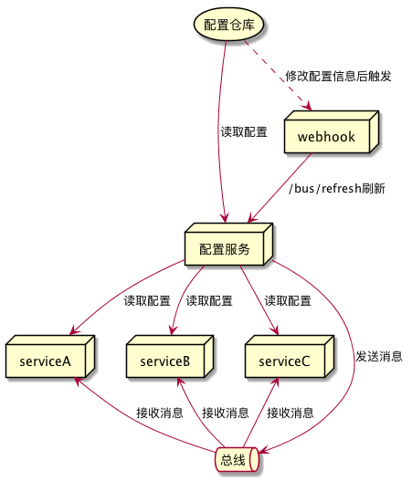

这是Spring Cloud上手系列的第八篇，代码放在GitHub上，随着本系列文章更新。
Spring Cloud Bus简介
Spring Cloud Bus以Spring Cloud Stream为基础，建立应用间的通讯通道。消息服务即可用于服务监控，也可以用作应用间的通讯和服务解耦。
将Spring Cloud Bus用于配置中心
在前一篇文章的最后一节，我们通过发送POST请求至应用的/refresh端点，可以让应用重新获取配置。如果我们要同时更新所有节点则需要逐个应用发送请求，这样管理起来并不方便。通过集成spring-cloud-starter-bus-amqp可以让我们通过配置中心应用统一管理各个应用配置信息的刷新。
集成之后的配置刷新机制如下图：

当访问配置中心的/bus/refresh时，它将通过总线发送广播消息。各个客户端接收到消息后，将重新读取配置信息。这样所有配置中心客户端就都能及时获取配置信息的变化。
安装消息中间件
Spring Cloud Bus支持RabbitMQ和Kafka两种服务。这里我们选择RabbitMQ。安装完毕后，默认的服务商品是5672，默认安装会安装管理控制台，管理控制台运行在15672端口。
集成消息总线
由于各个应用都有连接配置中心的需要，我们在根模块的build.gradle中添加库和依赖。
在ext.libs中添加bus`库：
ext.libs = [
"spring-cloud":"org.springframework.cloud:spring-cloud-dependencies:${versions.springCloud}",
"spring-web":"org.springframework:spring-web:${versions.spring}",
"spring-boot":"org.springframework.boot:spring-boot-starter",
"eureka-server":"org.springframework.cloud:spring-cloud-starter-netflix-eureka-server",
"eureka-client":"org.springframework.cloud:spring-cloud-starter-netflix-eureka-client",
"zuul":"org.springframework.cloud:spring-cloud-starter-netflix-zuul",
"feign":"org.springframework.cloud:spring-cloud-starter-feign",
"config-server":"org.springframework.cloud:spring-cloud-config-server",
"config-client":"org.springframework.cloud:spring-cloud-config-client",
"spring-retry":"org.springframework.retry:spring-retry",
"spring-boot-actuator":"org.springframework.boot:spring-boot-starter-actuator",
"spring-boot-aop":"org.springframework.boot:spring-boot-starter-aop",
"bus":"org.springframework.cloud:spring-cloud-starter-bus-amqp"
]
添加依赖：
if(name=='api'){
// API类工程的基本依赖
dependencies {
compile libs.'spring-web'
}
}else{
// Feign客户端工程的基本依赖
dependencies {
compile libs.'feign'
compile libs.'eureka-client'
compile libs.'spring-boot-actuator'
compile libs.'bus'
}
}
在配置中心和provider:service应用的配置文件中增加rabbitmq相关的配置信息。
spring:
cloud:
bus:
trace:
enabled: true
rabbitmq:
host: localhost
port: 5672
username: guest
password: guest
编译并运行
在根模块中使用gradle build重新编译所有模块。之后运行注册中心、配置中心和provider:service应用。我们就能在provider:service应用的http://localhost:9010/provider/config查看到配置文件中的信息了。
修改配置文件，之后访问配置中心http://localhost:9002/bus/refresh，从控制台中可以看到provider:service重新读取了配置。
再次访问provider:service应用的http://localhost:9010/provider/config可以看到修改后的配置已经生效了。
整个刷新过程中，我们并没有访问provider:service的http://localhost:9010/refresh，通过访问配置中心的/bus/refresh就刷新了，provider:service所读取的配置。
自动触发配置更新
如果配置信息是存储在版本库中，还可以通过版本库的hook实现提交时自动发送请求至配置中心/bus/refresh，这样就能实现完全自动的化的配置重新加载。
如果只想更新部分服务的配置信息，可以发送请求至/bus/refresh时添加destination参数。如：/bus/refresh?destination=sc-provider:**，这样将刷新sc-provider的所有应用。如果只想刷新某个服务实例，还可以进一步使用/bus/refresh?destination=sc-provider:9010，只刷新sc-provider:9010这个实例。
总线事件跟踪
如果想了解总线上的事件是怎样传播的，只需要设置spring.bus.trace.enabled=true。在访问配置中心的/bus/refresh之后，访问配置中心的/trace端点就能看到如下结果：
[
{
"timestamp": "2018-06-11T15:55:48.092+0000",
"info": {
"signal": "spring.cloud.bus.ack",
"event": "RefreshRemoteApplicationEvent",
"id": "39ca8e1f-ffbc-4f2d-881e-07f28ca1809b",
"origin": "sc-provider:9010",
"destination": "**"
}
},
{
"timestamp": "2018-06-11T15:55:47.832+0000",
"info": {
"method": "POST",
"path": "/bus/refresh",
"headers": {
"request": {
"host": "localhost:9002",
"user-agent": "curl/7.54.0",
"accept": "*/*"
},
"response": {
"X-Application-Context": "sc-config:native:9002",
"status": "200"
}
},
"timeTaken": "5545"
}
},
{
"timestamp": "2018-06-11T15:55:47.827+0000",
"info": {
"signal": "spring.cloud.bus.ack",
"event": "RefreshRemoteApplicationEvent",
"id": "39ca8e1f-ffbc-4f2d-881e-07f28ca1809b",
"origin": "sc-consumer:9011",
"destination": "**"
}
},
{
"timestamp": "2018-06-11T15:55:45.570+0000",
"info": {
"method": "GET",
"path": "/sc-provider/dev/master",
"headers": {
"request": {
"accept": "application/json, application/*+json",
"user-agent": "Java/1.8.0_172",
"host": "localhost:9002",
"connection": "keep-alive"
},
"response": {
"X-Application-Context": "sc-config:native:9002",
"Content-Type": "application/json;charset=UTF-8",
"Transfer-Encoding": "chunked",
"Date": "Mon, 11 Jun 2018 15:55:45 GMT",
"status": "200"
}
},
"timeTaken": "828"
}
},
{
"timestamp": "2018-06-11T15:55:42.539+0000",
"info": {
"signal": "spring.cloud.bus.sent",
"type": "RefreshRemoteApplicationEvent",
"id": "39ca8e1f-ffbc-4f2d-881e-07f28ca1809b",
"origin": "sc-config:native:9002",
"destination": "**:**"
}
},
{
"timestamp": "2018-06-11T15:55:42.537+0000",
"info": {
"signal": "spring.cloud.bus.ack",
"event": "RefreshRemoteApplicationEvent",
"id": "39ca8e1f-ffbc-4f2d-881e-07f28ca1809b",
"origin": "sc-config:native:9002",
"destination": "**"
}
},
{
"timestamp": "2018-06-11T15:55:37.624+0000",
"info": {
"method": "GET",
"path": "/sc-provider/dev/master",
"headers": {
"request": {
"accept": "application/json, application/*+json",
"user-agent": "Java/1.8.0_172",
"host": "localhost:9002",
"connection": "keep-alive"
},
"response": {
"X-Application-Context": "sc-config:native:9002",
"Content-Type": "application/json;charset=UTF-8",
"Transfer-Encoding": "chunked",
"Date": "Mon, 11 Jun 2018 15:55:37 GMT",
"status": "200"
}
},
"timeTaken": "691"
}
},
{
"timestamp": "2018-06-11T15:55:22.168+0000",
"info": {
"method": "GET",
"path": "/sc-provider/dev/master",
"headers": {
"request": {
"accept": "application/json, application/*+json",
"user-agent": "Java/1.8.0_172",
"host": "localhost:9002",
"connection": "keep-alive"
},
"response": {
"X-Application-Context": "sc-config:native:9002",
"Content-Type": "application/json;charset=UTF-8",
"Transfer-Encoding": "chunked",
"Date": "Mon, 11 Jun 2018 15:55:22 GMT",
"status": "200"
}
},
"timeTaken": "615"
}
}
]
从这些日志中可以看到配置中心发出的RefreshRemoteApplicationEvent事件被广播，配置中心客户端接受了这个事件，并重新读取了配置信息。
在总线上传递自定义消息
消息总线除了可以用于配置中心外，还可以处理我们自己的数据。下面我们测试从provider:service产生消息，在consumer:service中消费这条消息，使用的队列名称为hello。

在provider:service中配置消息生产者
添加Config配置类，在其中配置hello队列：
@Configuration
public class Config {
//名为hello的队列
@Bean
public Queue helloQueue(){
return new Queue("hello");
}
}
添加Sender类，由它负责发送消息:
@Component
public class Sender {
@Autowired
private AmqpTemplate amqpTemplate;
/**
* 发送消息至hello队列
*/
public void send(){
String message = "hello "+new Date();
System.out.println("发送消息:"+message);
amqpTemplate.convertAndSend("hello",message);
}
}
在ProviderController中增加/provider/send端点，用于发送消息。
@Autowired
private Sender sender;
@RequestMapping("/provider/send")
public void send(){
this.sender.send();
}
在consumer:service中配置消息消费者
添加消息接收类：
@Component
@RabbitListener(queues = "hello")
public class Receiver {
@RabbitHandler
public void process(String hello){
System.out.println("接收到消息:"+hello);
}
}
编译并运行程序
启动注册中心、配置中心、provider:service和consumer:service四个应用。
访问provider:service的/provider/send来发送消息。从控制台可以看到消息发出：

从consumer:service的控制台，可以看到消费方获取到的消息。

从RabbitMQ控制台也能看到hello队列的情况。
Comments